India's first grassroots hemophilia care assistant — a lightweight platform helping NGO workers track, coordinate, and respond to hemophilia care needs in low-tech areas.
Outcomes
I appreciate you taking the time to review this case study. I chose this example because it demonstrates my ability to work fast on a high-visibility project, navigate collaborations and negotiations with multiple team members and stakeholders, and work within confines of technical limitations.
Headquarters
HFI, Delhi, India
Founded
1983
Industry
NGO
Company Size
1,000+
Skills
UX Research · Systems Thinking · Prototyping · IA · Usability Testing · Localisation
Environment
Low-Tech · Offline-First · Multilingual
Hemophilia care in rural India is a high-stakes, low-infrastructure reality. Information lives across WhatsApp chats, paper diaries, phone trees, or memory. Emergencies often require 20+ minutes of manual coordination. There was no lightweight, offline-friendly digital tool that matched the real workflows of NGO field volunteers.
This gap — between complex hospital systems and the everyday tools of grassroots workers — became the starting point for Saarthi.
A SaaS, offline-first care assistant built for NGO workers managing hemophilia in remote regions.
My first week began with field visits. I shadowed 12 NGO volunteers across 5 hemophilia camps in Rajasthan and Delhi.
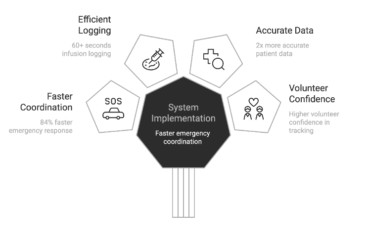
Field observations — paper workflows
I didn't know much about hemophilia when I joined. So I learned — deeply. I assisted volunteers in logging an infusion manually. It took 5+ minutes, multiple fields, and a lot of friction. Seeing the anxiety around "missing something important" completely reframed the problem for me.
I didn't want to design for volunteers. I wanted to design with them.
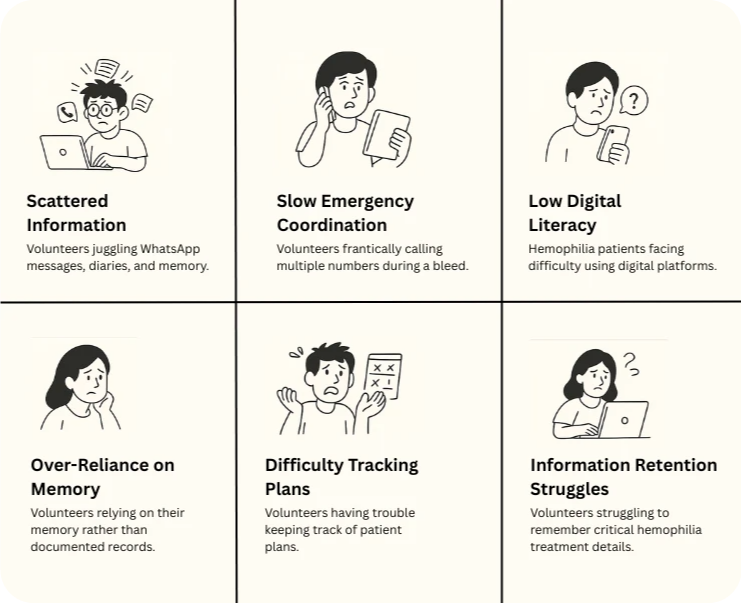
Pain points identified through field shadowing
"If the patient bleeds, I just start making calls… whoever picks up first decides the plan."
— NGO Volunteer, field shadowing sessionThis wasn't a system. This was improvisation. That moment became our design anchor.
A system wasn't needed. A guide was. Something that could support volunteers in real time.
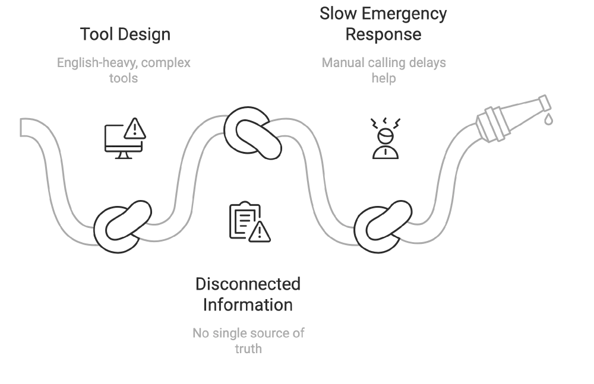
Existing hemophilia care tool analysis
This phase produced problem statements, persona variants (Volunteer, Supervisor, Patient Family), a new IA prioritizing primary over secondary information, and a simpler, more visual layout.
What if we created a mobile assistant that worked offline and in local languages — with clear, tappable cards and one-tap emergency actions?
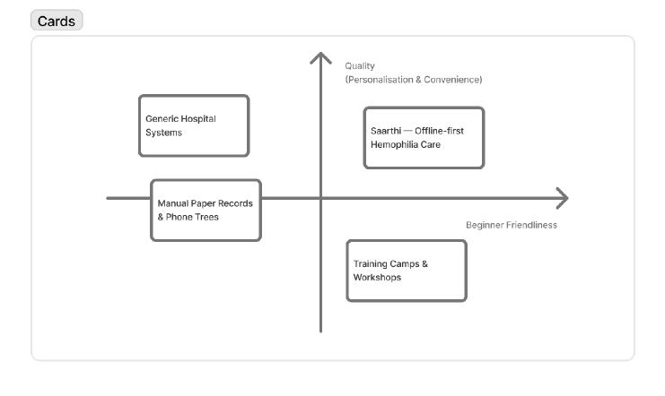
Early wireframes — icon + label navigation
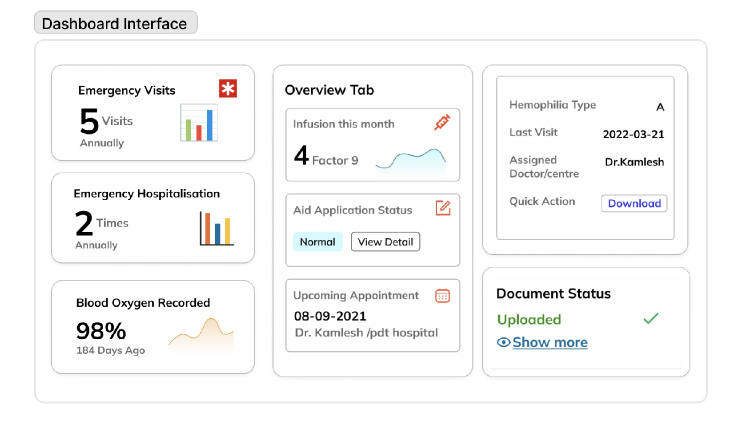
IA exploration — primary vs. secondary
We tested clickable prototypes in Hindi and Tamil with 150+ NGO workers (literacy range: class 6 to graduate-level).
Infusion Tracking — from 5 min to <60 sec
Before: Volunteers filled long paper forms, then called supervisors to update records.
After: Tap "Log Infusion" → Select preloaded factor → Auto-filled timestamp & ID.
Emergency Flow — one tap, real impact
Before: Phone trees, form filling, panic.
After: Tap "Alert" → GPS locates patient → Notifies ambulance + auto-generated report sent via SMS. Result: 84% faster incident response.
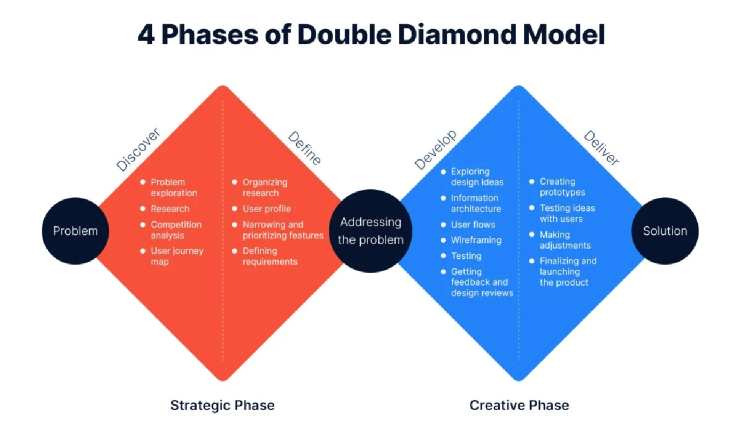
Key UX decisions — before and after
We designed the profile to be color-coded by severity (mild/moderate/severe), with tappable summary tiles for infusion frequency, last visit, and aid status. Minimal text + icon-based cues throughout.
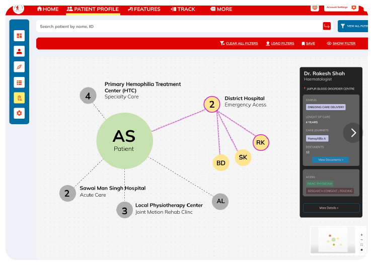
Patient summary — MVP screens
After a design jam and journey mapping session, I distilled the tool into 6 field-friendly modules:
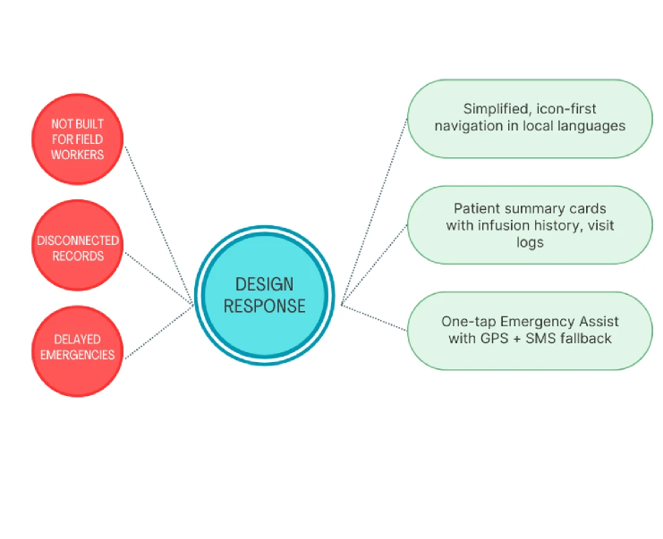
Core modules overview
A clean, comprehensive "at-a-glance" patient overview. The landing screen prioritizes emergency information so volunteers who often share phones, forget passwords, or rush to help during a bleed can access critical data without authentication barriers.
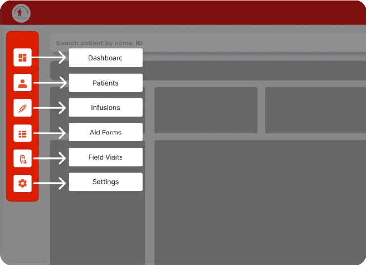
Patient profile — clean hierarchy with editable cards
A one-tap, auto-generated medical summary designed for rural connectivity and cross-center coordination. This feature automatically transforms raw patient data into clear clinical insights using simple charts volunteers and doctors can understand immediately.
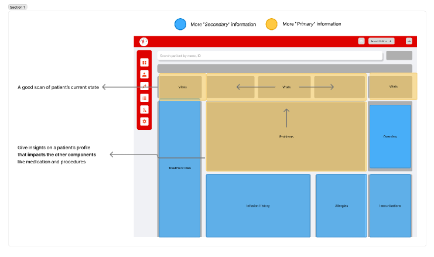
Downloadable patient profile
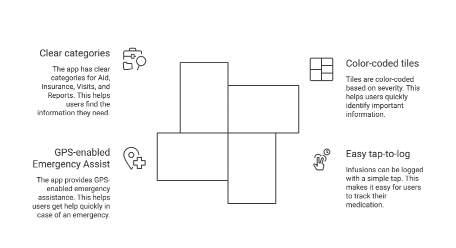
Patient–hospital tracking
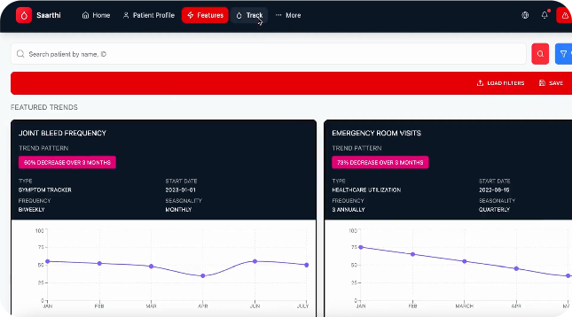
Patient profile flow
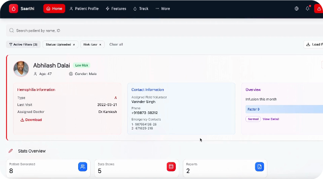
Emergency assist flow
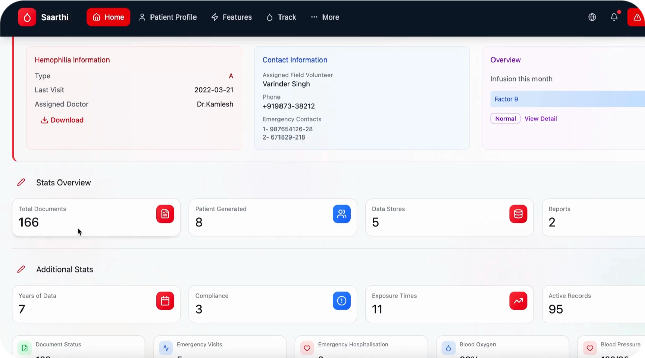
Infusion logging flow
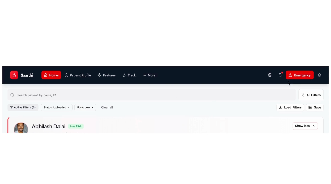
Reports & dashboard
We kept the interface extremely simple: color-coded tiles based on severity, easy tap-to-log infusions, GPS-enabled Emergency Assist, and clear categories for Aid, Insurance, Visits, and Reports.
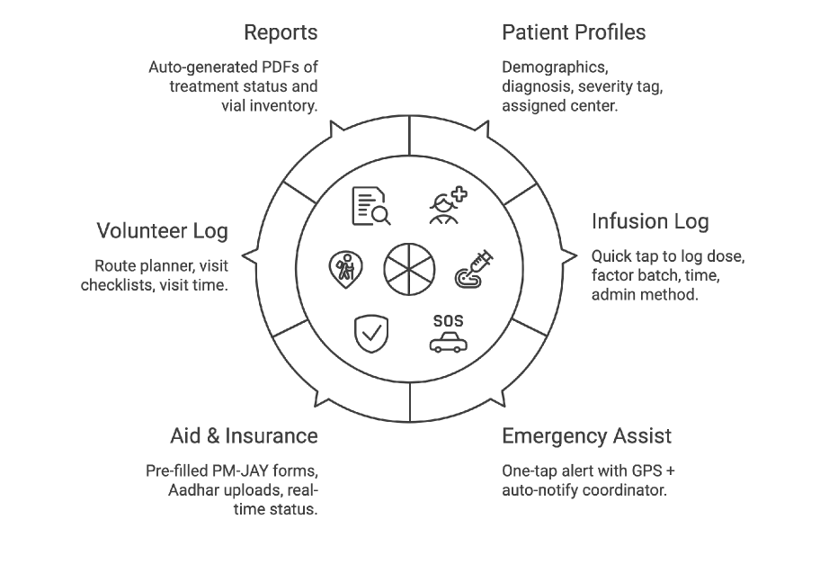
Final design — MVP dashboard
"Saarthi isn't just a system — it's a reliable partner in the journey of hemophilia care, bringing confidence and coordination to the people who need it most."
— Pawan, CEO, Hemophilia Federation IndiaSaarthi was the project where the PM was the domain expert — and the domain was genuinely complex. Hemophilia has 13 clotting factors. 98% of patients have Factor 9. Infusion history isn't a nice-to-have; it directly shapes emergency triage hierarchy. I had no time for independent clinical research. So I made the PM's knowledge my research backbone and designed fast from there.
The NGO had delivery timelines tied to their operational rollout — patients and coordinators couldn't wait for a perfect system. So I controlled scope aggressively: only the flows that touched life-critical decisions (infusion logging, emergency escalation, severity triage) made V1. Everything else was documented and deferred.
"When the PM is the domain expert, your job isn't to research — it's to translate clinical reality into something a coordinator can use at 2am."
Conclusion
Saarthi taught me that design in high-stakes contexts demands a different kind of rigor — not more features, but ruthless clarity.
Saarthi has been deployed across 3 states, supporting 150+ rural hemophilia camps and thousands of volunteer–patient interactions. The 100K users on the platform never see the design decisions. They just experience a product that always feels coherent. That invisibility is the whole point.
Glad we could cross paths.
Out of anywhere you could be, you're here.